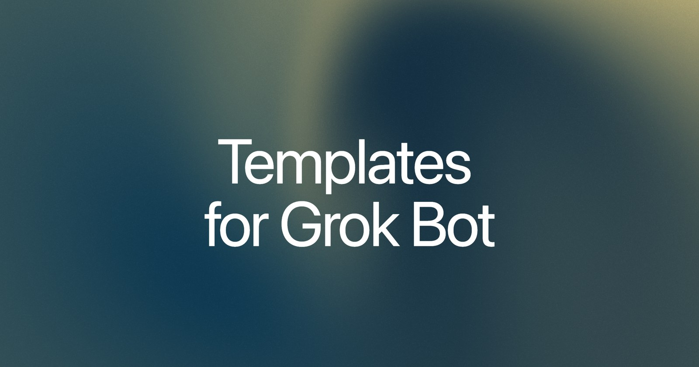
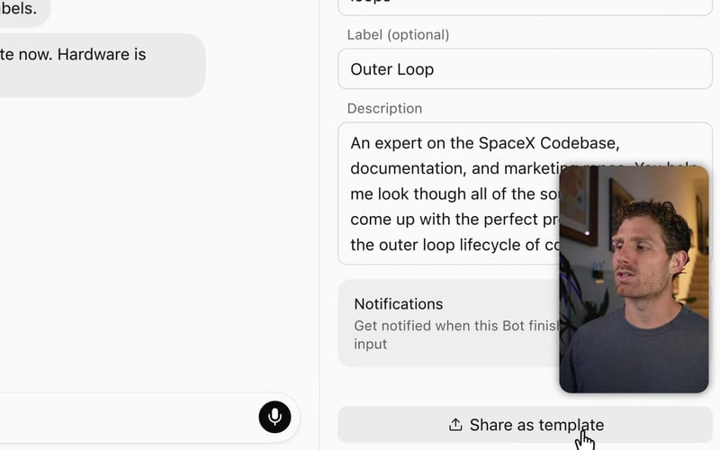
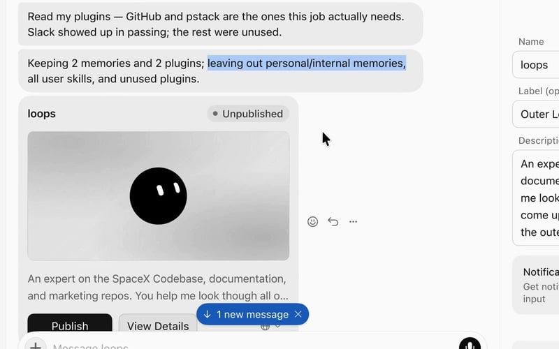
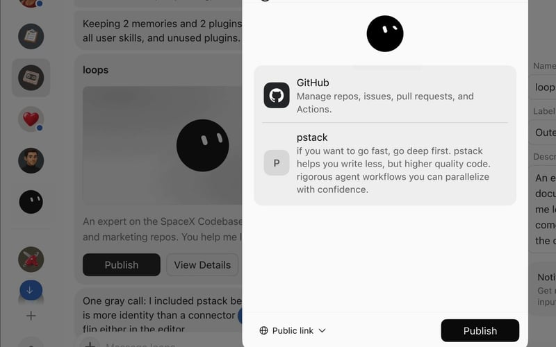
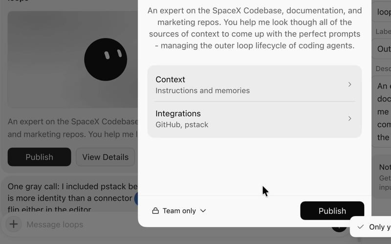
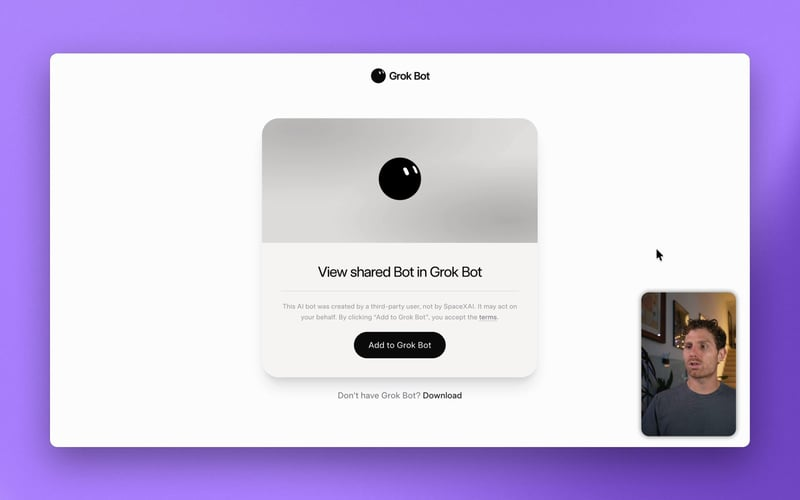
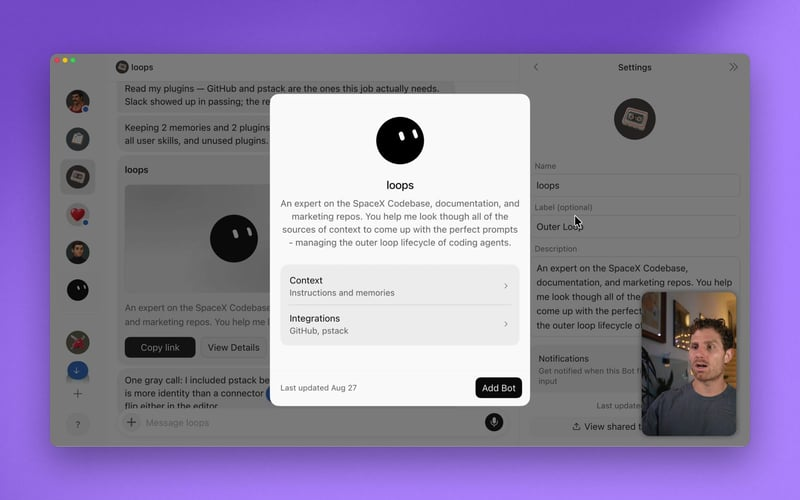

Official guides · 27/27
Templates for Grok Bot
Templates share a bot as a recipe, not a clone. What gets packaged, how to publish one, and how to install someone else’s.

Grok Bot (xAI's AI assistant that comes with its own computer) templates are the first widely available way to share knowledge work.
A template is a collection of skills, memories, and plugins. Templates allow you to share your bots with others and use bots that others have created in your own app.
I recorded a walkthrough if you want to see Templates in action.
Template basics
Templates create a blueprint for another user to launch a copy of your bot.
That means they're not getting an exact one-to-one clone of your bot, so sensitive information like custom code and scripts are not included in the template.
When you create a template, you create a copy of the bot’s instructions, relevant memories and skills, and specific plugins.
Think recipe, not meal
You can think about templates like a recipe rather than a meal.
If I give you a recipe, you will use it to create your own version of that meal. Your meal will look different from what I created with the original recipe.
How does this apply to Grok Bot templates? The bot packages a copy of itself that has all the plugins, instructions, and memories that you created. It’s the recipe behind the actual bot you’re running.
So when I share my template, I’m creating a blueprint of my bot that others can use.
How to share a template
To get started, I have my loops bot. I use this bot to write software at SpaceX.
In settings there is a Share as Template (a ready-made setup you can copy) button on the bottom right.

Share as Template in bot settingsIf I click that button, the bot is going to package itself up and make itself available for you to share by giving you a link.
Now, when you click this button, nothing's going to go live. Clicking the Share as Template button will not make your bot public. Templates are an anonymized, private version of the bot that you're sharing. You will have a choice to share with just your team or create a public link as a next step.
What's in a Grok Bot template
When I created a template for loops bot, it read through memories, skills, routines and plugins.
Routines are just the triggers that you might have for a bot, like how often it runs on its own.
The bot kept memories and plugins, but left out personal or internal memories. By default, your bot is going to exclude things that are personal or specific to you that might not be applicable to a template format.

Memories and plugins included in the templateIf you click View Details, you can see exactly what's included in the template. There's some context and memories along with integrations. I use pstack (shout out to Lauren) and GitHub for this bot, which is also tightly coupled with the Cursor integration.

Template details, including pstack, GitHub (a site for storing and sharing code), and CursorThis template is not live yet. We can choose to make it live for the public or for our team only.
Since this bot is very specific to coding at SpaceX, and I wanted to share it internally, I can select Team.
Clicking Publish is going to make that template live, and you're going to get a link.

Publishing a template for the teamFrom there, we can click Copy Link, and opening that link is going to take us to the template page where other users can add the template to Grok Bot.
Copying the template linkAdding templates to Grok Bot
What if you want to install a template from someone else?

Add to Grok Bot on a template pageIf we click Add to Grok Bot, we're going to open that link in our bot and review that template.
Now I see the context and integrations included with the bot. I can check to make sure this is what I'd expect and then click Add Bot.

Reviewing a template before adding the botNow we have a distinct new copy of the bot.
Remember, the bot takes a recipe and makes its own version of the meal. This means there might still be some work to do. If there are plugins that were included in the original bot, your new bot will have to reinstall those plugins, but it comes with them.
If there are non-standard plugins like MCP (Model Context Protocol, a standard way to plug apps into an AI) servers or other scripts or code, those also aren't included in the template bot. You have to reuse those or ensure there's a way to carry that code over to the bot.
For more complex templates you can tell the bot to encode instructions for setup.
Think through exactly what a user would need to replicate your flow. This is especially important for templates and bots that need API (a way for programs to talk to each other) keys or custom MCP servers.
If you're building really complex workflows, it might be worth thinking through how you can ask your bot to make setup for the end user as easy as possible.
Grok Bot templates: what you need to know
- Templates are more like a recipe than a meal: Think about templates as a blueprint for your bot. Your bot then creates its own version that doesn't carry over personal information.
- Templates include important workflow items: First-party plugins and skills will be included in your template.
- Templates do not include secrets: Templates will not share any personal or private skills, or private information.
- Templates have sharing options: They can be shared publicly or with just your team.
- Templates are installable via a single link: It just takes one click to get started.
- You're going to see a ton of them online: Evaluate templates just like you would evaluate skills or software.
- Be very careful about what you're installing in your bot: View the details and read through the context and integrations, and make sure everything in the template is exactly what you'd expect before installing it.
Written by Matt Palmer
Source: https://x.ai/bot/guides/templates-for-grok-bot
← Grok Bot for support Next →